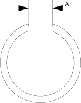
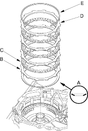
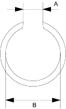
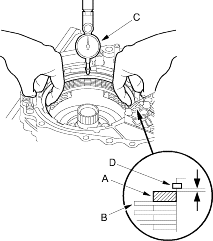

- Verify that the snap ring end gap (A) is 15 mm (0.59 in.) and above.

- Soak the reverse brake discs thoroughly in ATF for a minimum of 30 minutes. Before installing the plates and discs, make sure the inside of the clutch drum is free of dirt and other foreign matter.
- Install the disc spring (A) in the direction shown.

- Starting with a reverse brake plate (B), alternately install the plates and discs (C). Install the reverse brake end plate (D) and snap ring (E).
- Verify that the snap ring end gap (A) is 18 mm (0.71 in.) and above and the inside diameter (B) of the snap ring is 143.5 mm (5.65 in.) and above.

- Measure the clearance between the reverse brake end plate (A) and top disc (B) with a dial indicator (C). Zero the dial indicator with the reverse brake end plate lowered and lift it up to the snap ring (D). The distance that the end plate moves is the clearance between the end plate and top disc.
NOTE: Take measurements in at least three places and use the average as the actual clearance.
Reverse Brake End Plate-to-Top Disc Clearance:
Service Limit: 0.45-0.75 mm (0.018-0.030 in.)
